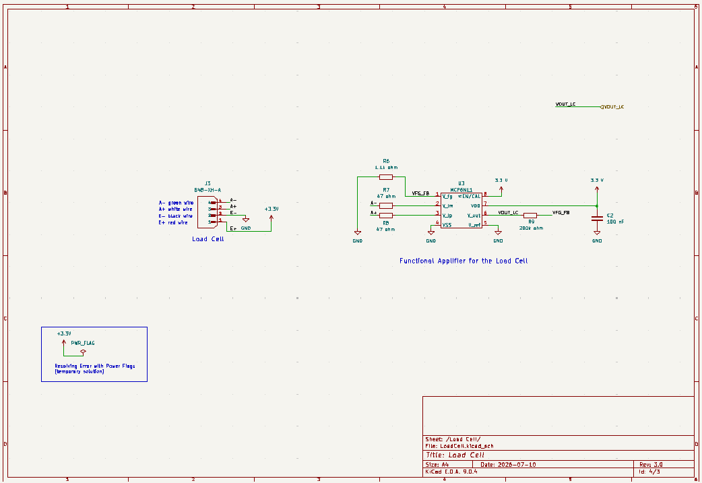
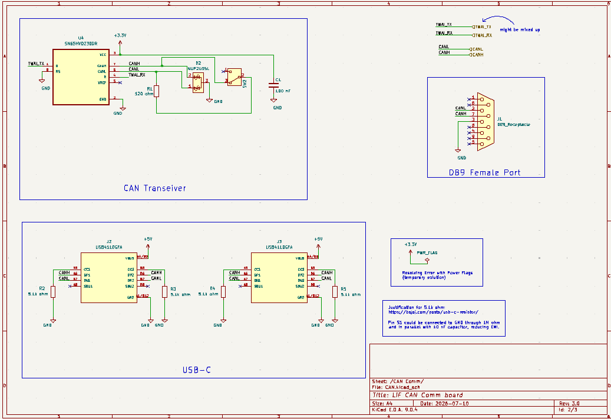
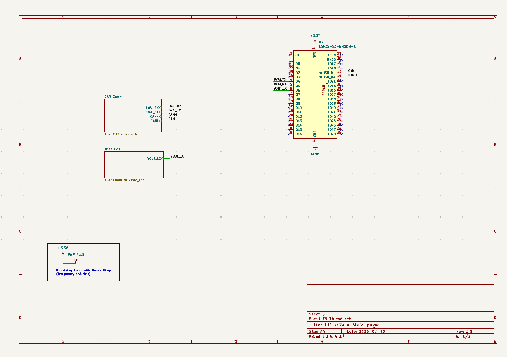

PCB Revision 2 Development
Continued refining the second revision of the PCB schematic. The focus was improving the organization of the design by separating major functional blocks into hierarchical sheets while updating several subcircuits that had been reviewed during previous design meetings.
Work primarily focused on the load cell amplifier circuitry, CAN bus connections, and USB-C interface used throughout the elevator control boards.
Load Cell Circuit Improvements
The load cell signal conditioning circuit was revised to use the MCP6N11 instrumentation amplifier. The updated circuit simplifies the analog front-end while providing better integration with the remaining PCB components.
Component placement and signal routing were reviewed to improve readability before beginning PCB layout.


USB-C CAN Interface
Continued developing the USB-C communication module used to distribute both CAN communication and power between elevator controller boards.
The connector routes CANH and CANL through the USB-C interface while providing a +5 V supply for downstream hardware modules.
Design Decisions
- Added 5.1 kΩ pull-down resistors on the USB-C CC pins.
- Maintained differential routing for CANH and CANL.
- Used the horizontal USB-C connector for communication only.
- Prepared the schematic for future hardware revisions.

This revision was later refined as additional design requirements were identified.

Project Hierarchy
Continued reorganizing the project into hierarchical schematic sheets. Separating the hardware into functional blocks significantly improved navigation and reduced clutter on the root sheet.

Engineering Discussion
Although today's work consisted mainly of schematic refinements rather than implementing entirely new hardware, these improvements greatly increased the maintainability of the project. Organizing the design into hierarchical sheets simplified navigation while making future revisions more manageable.
The updated USB-C interface provides a reusable communication and power connector for multiple subsystem boards, while the revised load cell circuit offers a cleaner analog front-end for future PCB layout work.
Next Steps
- Continue refining the PCB schematic.
- Verify USB-C pin assignments across subsystem boards.
- Complete remaining schematic symbols and project libraries.
- Move towards organizing databases for the project.